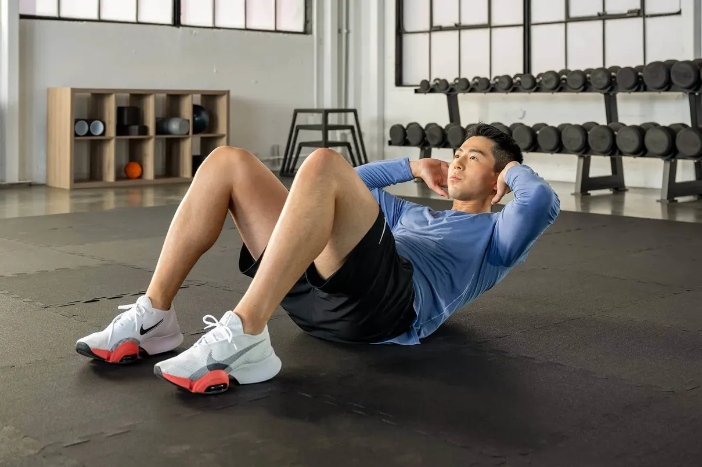
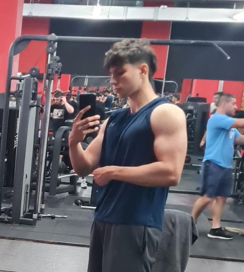
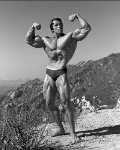

c
Fii cea mai bună
Alege varianta potrivită pentru tine:
c

CASUAL
Obiectiv: Pentru cei care doresc să-și îmbunătățească sănătatea generală și să-și crească nivelul de energie.
Descriere: Acest nivel este ideal pentru persoanele care vor ... să-și formeze un obicei constant de exercițiu, să-și tonifieze corpul și să-și crească energia zilnică. Antrenamentele sunt flexibile și ușor de integrat în viața de zi cu zi, fiind concepute să te ajute să câștigi forță, să-ți îmbunătățești rezistența și mobilitatea, fără a implica un angajament copleșitor.

INTERMEDIAR
Obiectiv: Pentru cei care vor să își îmbunătățească forța, masa musculară și să-și aprofundeze cunoștințele de fitness.
Descriere: Acest nivel este destinat celor care doresc să ... depășească faza de bază a fitnessului. Se concentrează pe creșterea masei musculare, îmbunătățirea tehnicilor de ridicare și creșterea rezistenței. Prin planuri structurate de progres, antrenamente variate și ghidaj nutrițional, vei dezvolta o musculatură solidă, bine definită, și vei câștiga încrederea necesară pentru a-ți împinge limitele în sala de sport.

AVANSAT
Obiectiv: Pentru cei care doresc să atingă o formă fizică de elită, competitivă, și performanță de vârf.
Descriere: Creat pentru atleți serioși și pasionați dedicați, ... acest nivel oferă aprofundarea artei culturismului. Se concentrează pe maximizarea hipertrofiei musculare, perfecționarea simetriei corporale și atingerea unei condiții fizice optime prin cicluri de antrenament meticulos planificate. Tehnicile avansate, strategiile nutriționale stricte și metodele de îmbunătățire a performanței te vor ajuta să construiești un fizic impresionant, pregătit pentru competiție. Acest nivel te pregătește pentru concursuri de culturism de elită, împingându-ți forța, disciplina și dedicarea la maxim.